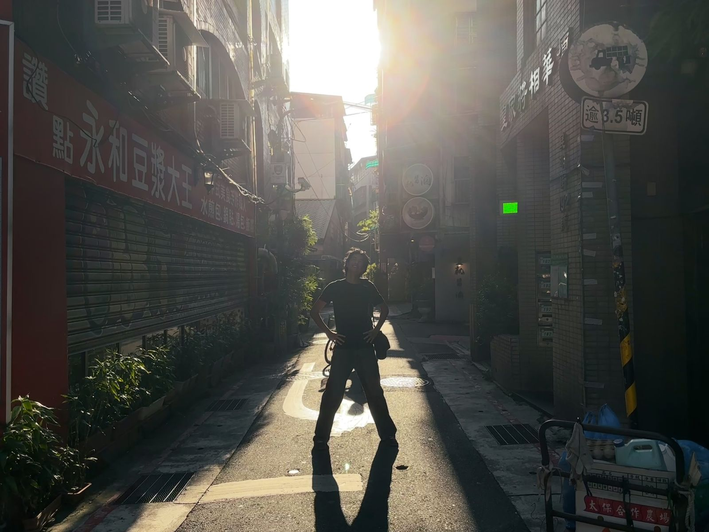

Hi, welcome to my guide!

I am an IT student from the Netherlands and I am doing an exchange semester at National Taipei University of Technology (Taipei Tech). I live in Wanhua, the old part of Taipei around Longshan Temple.
When I arrived I had no idea where to eat, how to get around or what to say at the 7-Eleven counter. I made this website so other exchange students can see what a normal day here looks like and settle in faster than I did.
What you will find here
- My Neighborhood - life around Longshan Temple in Wanhua
- Food & 7-Eleven - where I eat and what it costs
- Active Taipei - running, skating and getting around
- Learn Mandarin - survival phrases with flashcards
What it costs to live here
Taipei is cheaper than most Dutch cities, especially food. Fill in your own monthly costs in euros and click the button to see your total in euros and Taiwan dollars (NTD).